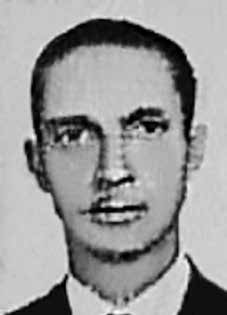

Abelardo
Rausch
de Alcântara
CIRCUNSTÂNCIAS DA MORTE
Abelardo Rausch de Alcântara tinha 42 anos de idade quando foi morto, em circunstâncias misteriosas, sob a tutela do Pelotão de Investigações Criminais (PIC), em Brasília. A versão oficial divulgada pela Secretaria de Segurança Pública do Distrito Federal sustentou que Abelardo fora convocado para prestar esclarecimentos sobre a ocorrência de um roubo na agência bancária em que trabalhava. Confrontado com provas incriminatórias, Abelardo teria quebrado um copo de vidro e utilizado os cacos para cortar os próprios pulsos durante a sessão de interrogatório. O relato oficial informa ainda que Abelardo fora imediatamente socorrido pelo serviço médico do Batalhão de Polícia do Exército. Durante o transporte para o Hospital Distrital, a ambulância que conduzia Abelardo teria se chocado violentamente contra um veículo da Secretaria de Governo do Distrito Federal, em frente ao Palácio do Buriti. Abelardo teria falecido em virtude das lesões provocadas no acidente. Após a autópsia, ainda de acordo com a versão da Secretaria de Segurança, constatou-se que Abelardo havia ingerido desinfetante, em uma tentativa de suicídio. A Secretaria não soube precisar em que momento Abelardo havia ingerido o produto, mas afirma que o sargento Antônio Vasconcellos, que acompanhara Abelardo na ambulância, testemunhou inúmeras tentativas de Abelardo de pôr termo à vida. Ainda que as circunstâncias da morte de Abelardo permaneçam imprecisas, a versão oficial não se sustenta.
Na manhã do dia 13 de fevereiro de 1970, de acordo com o depoimento de Elza Souza de Alcântara, três homens trajando terno e gravata estiveram em sua casa à procura do senhor Abelardo Rausch de Alcântara. Embora os homens tenham se identificado como servidores da Caixa Econômica, Abelardo não os reconheceu. Após expressar preocupação com a presença inusitada, decidiu acompanhar os visitantes desconhecidos, porque naquele momento corriam investigações na sede da agência em que estava alocado. Naquela noite, sem notícias do marido, Elza decidiu buscar informações. Após uma primeira tentativa frustrada na sede da agência da Caixa, conseguiu informações sobre seu marido na delegacia localizada no centro de Taguatinga. Abelardo estava supostamente prestando depoimento e em breve seria liberado. Por volta das 9 horas da manhã do dia seguinte, Elza recebeu uma nova visita em sua residência. Um indivíduo desconhecido solicitou roupas de trabalho para o senhor Abelardo que, supostamente, ainda estava prestando depoimento, mas iria para o trabalho após a entrevista. O homem recolheu as roupas solicitadas e se retirou. Após algum tempo, dona Elza recebeu Doralice Tavares em sua casa, e ela aparentava estar muito nervosa. Doralice trazia a informação de que um homem, o qual ela não conhecia, havia estado em sua casa e lhe dito que Abelardo havia falecido e estava sendo velado na capela número 01 do Cemitério da Esperança. Dona Elza deslocou-se para o cemitério e encontrou na capela de número 01 o corpo de seu marido sendo velado junto a dois outros indivíduos que ela não pode reconhecer. O corpo de Abelardo estava vestido com as mesmas roupas que Elza havia entregado horas antes ao homem desconhecido. Dona Elza afirmou que o rosto do marido estava inchado e enfaixado e, diante desse estranhamento, resolveu desabotoar a camisa que o marido trazia e percebeu que seu corpo apresentava hematomas, marcas de queimadura, feridas variadas e que o braço esquerdo aparentava estar quebrado.
Há inúmeras contradições nas versões oficiais divulgadas à época. Por exemplo, o registro do suposto acidente ocorrido em frente ao Palácio do Buriti não faz menção a Abelardo Rausch; há indicação de ferimentos provocados ao sargento Vasconcelos apenas. Além disso, documentos importantes para o esclarecimento do caso desapareceram. O Jornal do Brasil publicado em 18 de fevereiro de 1970 faz menção a um laudo, realizado por uma médica independente, que destacava sinais (como a existência de hematomas e um pulso quebrado) que não haviam sido mencionados no laudo anterior produzido pelo Instituto Médico Legal (IML). Investigações posteriores conduzidas pela Comissão Especial sobre Mortos e Desaparecidos Políticos (CEMDP), localizaram o motorista do veículo que foi atingido pela ambulância do Exército. O senhor Jati Rodrigues dos Santos afirmou que não tinha dúvidas de que a Kombi que dirigia fora atingido de propósito pela ambulância do Exército, a qual era conduzida pelo sargento Hermano Carlos dos Santos. Levado a julgamento, o senhor Jati foi absolvido da acusação de crime culposo e, além disso, o juiz declarou na sentença que o réu fora acusado pela morte de um defunto. Apesar de não reconhecer indícios de participação política de Abelardo Rausch de Alcântara, a CEMDP decidiu pelo deferimento do caso em decorrência da morte dessa vítima ter ocorrido por causas não naturais, em dependência policial ou assemelhada. O corpo de Abelardo Rausch fora enterrado no Cemitério Campo da Esperança, em Brasília (DF).
Abelardo Rausch de Alcântara was 42 years old when he was killed, under mysterious circumstances, under the supervision of the Criminal Investigations Squad (PIC), in Brasília. The official version released by the Public Security Secretariat of the Federal District stated that Abelardo was summoned to provide clarification on the occurrence of a robbery at the bank branch where he worked. Faced with incriminating evidence, Abelardo allegedly broke a glass cup and used the shards to cut his own wrists during the interrogation session. The official report also states that Abelardo was immediately rescued by the medical service of the Army Police Battalion. During transport to the District Hospital, the ambulance carrying Abelardo collided violently with a vehicle belonging to the Federal District Government Secretariat, in front of the Buriti Palace. Abelardo would have died due to the injuries caused in the accident. After the autopsy, according to the Security Secretariat's version, it was found that Abelardo had ingested disinfectant in a suicide attempt. The Secretariat was unable to specify when Abelardo had ingested the product, but states that Sergeant Antônio Vasconcellos, who accompanied Abelardo in the ambulance, witnessed numerous attempts by Abelardo to end his life. Although the circumstances of Abelard's death remain unclear, the official version does not hold water.
On the morning of February 13, 1970, according to the testimony of Elza Souza de Alcântara, three men wearing suits and ties were at her house looking for Mr. Abelardo Rausch de Alcântara. Although the men identified themselves as Caixa Econômica employees, Abelardo did not recognize them. After expressing concern about the unusual presence, he decided to accompany the unknown visitors, because at that time investigations were underway at the headquarters of the agency where he was stationed. That night, with no news from her husband, Elza decided to seek information. After a first unsuccessful attempt at the Caixa branch headquarters, she obtained information about her husband at the police station located in the center of Taguatinga. Abelardo was supposedly giving a statement and would soon be released. Around 9 am the following day, Elza received a new visitor at her home. An unknown individual requested work clothes for Mr. Abelardo, who was supposedly still giving his statement but was going to work after the interview. The man collected the requested clothes and left. After some time, Dona Elza welcomed Doralice Tavares into her home, and she appeared to be very nervous. Doralice brought information that a man, whom she did not know, had been to her house and told her that Abelardo had died and was being laid to rest in chapel number 01 at Cemitério da Esperança. Dona Elza went to the cemetery and found in chapel number 01 her husband's body being laid to rest along with two other individuals that she could not recognize. Abelardo's body was dressed in the same clothes that Elza had given hours earlier to the unknown man. Dona Elza stated that her husband's face was swollen and bandaged and, faced with this strangeness, she decided to unbutton the shirt her husband was wearing and noticed that his body had bruises, burn marks, various wounds and that his left arm appeared to be broken.
There are numerous contradictions in the official versions released at the time. For example, the record of the supposed accident that occurred in front of the Buriti Palace makes no mention of Abelardo Rausch; there is only indication of injuries caused to Sergeant Vasconcelos. Furthermore, important documents for clarifying the case disappeared. The Jornal do Brasil published on February 18, 1970, mentions a report, carried out by an independent doctor, which highlighted signs (such as the existence of bruises and a broken wrist) that had not been mentioned in the previous report produced by the Instituto Médico Legal (IML). Subsequent investigations conducted by the Special Commission on Political Deaths and Disappearances (CEMDP), located the driver of the vehicle that was hit by the Army ambulance. Mr. Jati Rodrigues dos Santos stated that he had no doubt that the Kombi he was driving was hit on purpose by the Army ambulance, which was driven by Sergeant Hermano Carlos dos Santos. Taken to trial, Mr. Jati was acquitted of the charge of culpable crime and, in addition, the judge declared in the sentence that the defendant had been accused of the death of a deceased person. Despite not recognizing signs of political participation by Abelardo Rausch de Alcântara, CEMDP decided to grant the case due to the fact that this victim's death occurred due to unnatural causes, in police custody or similar. Abelardo Rausch's body was buried in the Campo da Esperança Cemetery, in Brasília (DF).
Abelardo Rausch de Alcântara tenía 42 años cuando fue asesinado, en circunstancias misteriosas, bajo la supervisión del Equipo de Investigaciones Criminales (PIC), en Brasilia. La versión oficial difundida por la Secretaría de Seguridad Pública del Distrito Federal indicó que Abelardo fue citado para brindar aclaraciones sobre la ocurrencia de un robo en la sucursal bancaria donde trabajaba. Ante pruebas incriminatorias, Abelardo supuestamente rompió un vaso de vidrio y usó los fragmentos para cortarse las muñecas durante la sesión de interrogatorio. El informe oficial también señala que Abelardo fue rescatado de inmediato por el servicio médico del Batallón de Policía del Ejército. Durante el traslado al Hospital Distrital, la ambulancia que transportaba a Abelardo chocó violentamente con un vehículo de la Secretaría de Gobierno del Distrito Federal, frente al Palacio Burití. Abelardo habría fallecido a causa de las heridas provocadas en el accidente. Tras la autopsia, según versión de la Secretaría de Seguridad, se constató que Abelardo había ingerido desinfectante en un intento de suicidio. La Secretaría no pudo precisar cuándo Abelardo ingirió el producto, pero afirma que el sargento Antônio Vasconcellos, que acompañaba a Abelardo en la ambulancia, fue testigo de numerosos intentos por parte de Abelardo de acabar con su vida. Aunque las circunstancias de la muerte de Abelardo aún no están claras, la versión oficial no se sostiene.
En la mañana del 13 de febrero de 1970, según testimonio de Elza Souza de Alcântara, tres hombres vestidos de traje y corbata se encontraban en su casa buscando al señor Abelardo Rausch de Alcântara. Aunque los hombres se identificaron como empleados de Caixa Econômica, Abelardo no los reconoció. Tras expresar preocupación por la inusual presencia, decidió acompañar a los visitantes desconocidos, pues en ese momento se realizaban investigaciones en la sede de la dependencia donde se encontraba destinado. Esa noche, sin noticias de su marido, Elza decidió buscar información. Tras un primer intento fallido en la sede de la sucursal de Caixa, obtuvo información sobre su marido en la comisaría situada en el centro de Taguatinga. Abelardo supuestamente estaba prestando declaración y pronto sería liberado. Alrededor de las 9 de la mañana del día siguiente, Elza recibió una nueva visita en su casa. Un desconocido solicitó ropa de trabajo para el señor Abelardo, quien supuestamente aún se encontraba prestando su declaración pero se dirigía a trabajar después de la entrevista. El hombre recogió la ropa solicitada y se fue. Al cabo de un tiempo, doña Elza recibió en su casa a Doralice Tavares, quien se mostró muy nerviosa. Doralice informó que un hombre, a quien no conocía, había estado en su casa y le dijo que Abelardo había muerto y estaba siendo enterrado en la capilla número 01 del Cemitério da Esperança. Doña Elza acudió al cementerio y encontró en la capilla número 01 el cuerpo de su marido siendo sepultado junto con otras dos personas que no pudo reconocer. El cuerpo de Abelardo estaba vestido con la misma ropa que Elza le había entregado horas antes al desconocido. Doña Elza manifestó que el rostro de su esposo estaba hinchado y vendado y ante esta extrañeza decidió desabrochar la camisa que llevaba su esposo y notó que su cuerpo tenía hematomas, quemaduras, heridas diversas y que su brazo izquierdo parecía estar roto.
Existen numerosas contradicciones en las versiones oficiales difundidas en aquel momento. Por ejemplo, el acta del supuesto accidente ocurrido frente al Palacio Buriti no hace mención a Abelardo Rausch; Sólo hay indicios de lesiones ocasionadas al sargento Vasconcelos. Además, desaparecieron documentos importantes para el esclarecimiento del caso. El Jornal do Brasil, publicado el 18 de febrero de 1970, menciona un informe, realizado por un médico independiente, que destacaba signos (como la existencia de hematomas y una muñeca rota) que no habían sido mencionados en el informe anterior elaborado por el Instituto Médico Legal (IML). Investigaciones posteriores realizadas por la Comisión Especial sobre Muertes y Desapariciones Políticas (CEMDP), localizaron al conductor del vehículo que fue atropellado por la ambulancia del Ejército. El señor Jati Rodrigues dos Santos afirmó que no tenía dudas de que la Kombi que conducía fue golpeada intencionalmente por la ambulancia del Ejército, conducida por el sargento Hermano Carlos dos Santos. Llevado a juicio, el señor Jati fue absuelto del cargo de delito culposo y, además, el juez declaró en la sentencia que el acusado había sido acusado de la muerte de una persona fallecida. A pesar de no reconocer signos de participación política de Abelardo Rausch de Alcântara, el CEMDP decidió conceder el caso debido a que la muerte de esta víctima se produjo por causas no naturales, bajo custodia policial o similar. El cuerpo de Abelardo Rausch fue enterrado en el cementerio Campo da Esperança, en Brasilia (DF).